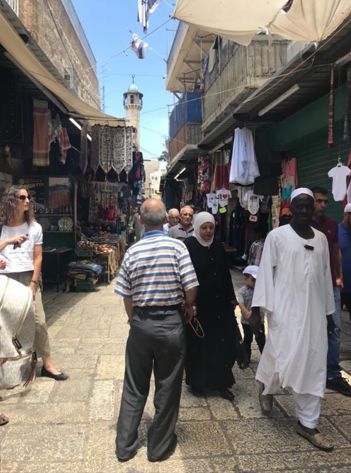

Israel
Culture in Israel is very different from the rest; it is based on the Jewish religion. Israel has many Jewish immigrants from several countries. As a result, Israel has a creative and diverse culture. The holidays and festivals are all based on the Hebrew calendar, which includes Hanukah, Yom Kippur, Sukkot, and Rosh Hashanah.
Turkey
Culture in modern Turkey is so diverse with influences from Asian and European continents. The majority of the people in Turkey follow Islam religion, which places specific obligations like praying five times a day and women covering themselves or taking their shoes off when going to certain mosques. Women in Turkey are giving the option of following those obligations, but they aren’t forced to do so. Due to their religion, you will hear loud calls coming from speakers in mosques telling their people to pray.
Egypt
Culture in Egypt is very similar to that of Turkeys. Most of the people in Egypt practice Islam, and you will also hear the prayer calls coming from the mosques. Unlike Turkey, Egypt has rules toward how women should dress. Women in Egypt should be conservative and should cover upper arms and legs. As a tourist in Egypt, you also have to follow specific dress codes like wearing jeans and not wearing shorts and when going to mosques to remove your shoes.
Jordan
Culture in Jordan is a mixture of Arabic and Islamic traditions. On special occasions, Jordanian men and women still wear traditional customs. The traditional outfit worn by men is made of a one-piece full-body covering dress, called a “Dishdashah,” and a headcover, including a white cup called “Thaguyah.” The women’s national custom is a handmade full-body covering dress usually black with red patterns.